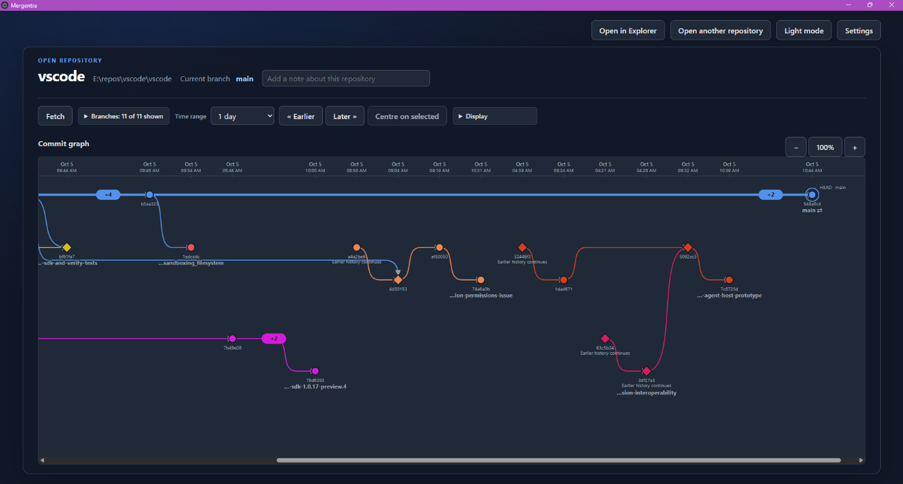

Follow any branch
Select a target branch and trace its inferred parent chain through the main line, including branches that are no longer active.
Mergentra 1.0 is available for Windows
Mergentra turns a busy GitHub or local Git repository into an interactive branch graph. Follow branches, understand merges, and see how your project got here.
Free to download. Requires Git for Windows.
Understand the shape of change
Git history is full of useful information. Mergentra puts the relationships back in view without making you read a wall of hashes.
Select a target branch and trace its inferred parent chain through the main line, including branches that are no longer active.
Straight branch lanes and curved connectors show where work diverged, moved in parallel, and came back together.
Filter references, move through time, zoom the graph, and inspect commit details in the Review dock.
Give branches useful colors and notes so the history makes sense to your team, not just to Git.
Designed for real repositories
Mergentra is a Windows desktop application. It reads the local Git repository you choose and never turns your source code into a web upload.

Start exploring
Mergentra 1.0 is free to download for Windows. Git for Windows is required.